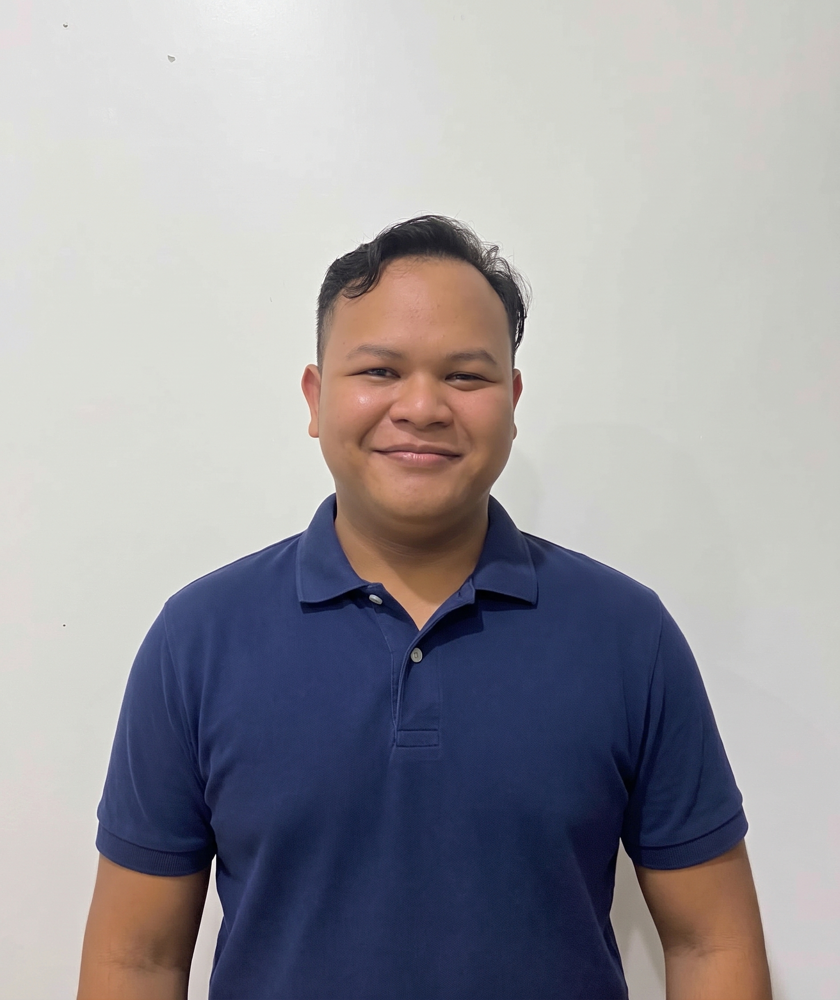

Data Operations & Automation Flow Specialist — terbiasa mengumpulkan, membangun, dan mengotomasi alur data operasional menjadi dashboard dan laporan yang siap dipakai tim.

Sebagai anak pertama yang terbiasa memegang tanggung jawab sejak dini, Arie membawa semangat itu ke dalam caranya bekerja dengan data: teliti, sistematis, dan tidak mudah puas. Kecintaannya pada eksplorasi alam terbuka dan keberanian mencoba hal baru tercermin dalam etos kerjanya sehari-hari — selalu ingin tahu proses di balik setiap angka, cepat beradaptasi dengan tantangan baru, dan senang membangun relasi lintas tim.
Selama lebih dari lima tahun mengelola data operasional di Sayurbox, ia terbiasa mengumpulkan dan membangun data, menyusun dashboard, hingga merancang alur otomatisasi yang memangkas pekerjaan manual. Prinsip yang dipegangnya sederhana: semakin banyak ilmu yang digali, semakin baik keputusan yang bisa diambil.
Membangun dashboard pemantauan stok harian untuk tim inventory, mengintegrasikan data dari beberapa sumber agar tim dapat memantau ketersediaan barang dan melakukan rekonsiliasi stok secara lebih cepat dan akurat.
Merancang alur otomatisasi data dari proses inbound hingga outbound gudang, mengurangi input manual dan potensi kesalahan pencatatan, sehingga laporan harian bisa disiapkan lebih cepat.
Menyusun sistem plotting jadwal Pekerja Harian Lepas (PHL) untuk tim produksi dan inbound, membantu alokasi tenaga kerja lebih efisien dan mudah dipantau oleh leader.